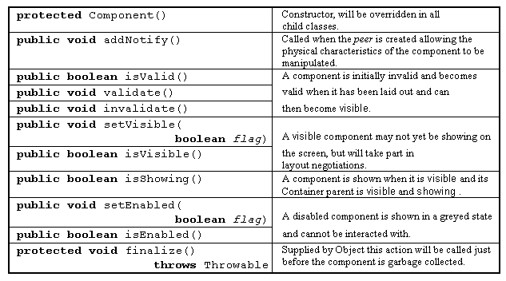

The Component class -
lifecycle actions

The Component class is at the root of the AWT hierarchy and so all of its resources are inherited by all AWT Component classes. The following tables introduce some of these actions for a more definitive list, and a more complete explanation of the actions presented, refer to the on-line API documentation.